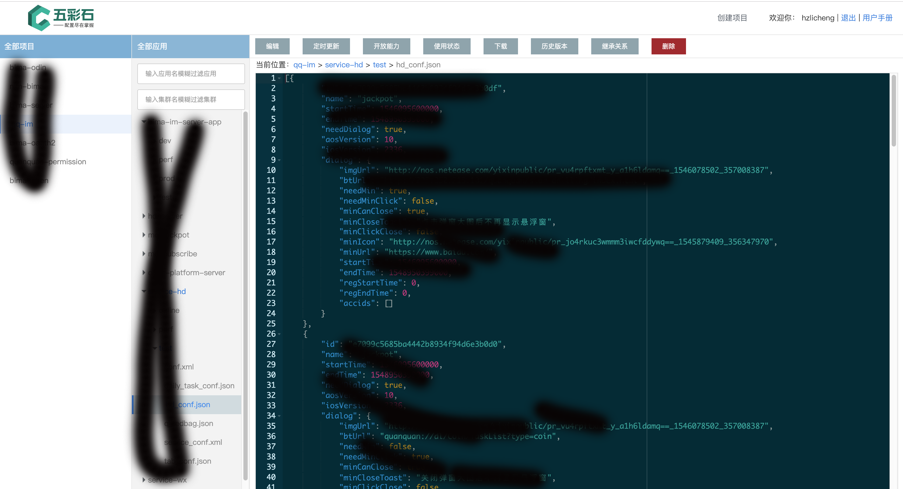

项目介绍
圈圈配置中心是为了服务网易圈圈开发的通用配置中心服务。相比社区已有的开源配置中心，有更多的高级功能和更简洁的接入方式，如
- 暂停功能
- 定时更新
- 历史版本回滚
- 集群配置
- 开放能力
- 权限管理
- 报警组管理
- 邮件、泡泡、stone报警支持
- 格式检查
- sdk载入预检查
- 继承
同时可以集成oauth账号鉴权，方便项目人员权限管理。目前已经在网易内部多个项目的线上环境部署使用。如有需要使用可以联系我提供任何支持。（目前项目处于公司内部开源阶段，因此还没有开放使用，计划后续会开源到社区。）

文件格式支持
| 后缀 | sdk预检查 | 格式检查 | 继承 |
|---|---|---|---|
| properties | ✔️ | ✔️ | ✔️ |
| yml | ✔️ | ✔️ | ✘ |
| json | ✔️ | ✔️ | ✘ |
| xml | ✔️ | ✔️ | ✘ |
| txt | ✔️ | ✘ | ✘ |
架构图
Springboot工程三步快速接入
1、通过在Application类上注解@EnableBimaconf启动bimaconf
2、在application.yml中配置server, project
3、在代码中增加对应的配置文件类
SDK具体使用
Bimaconf配置
Bimaconf SDK启动时自身需要一个配置文件（普通sdk的withProperties启动模式可以不需要配置文件，但同样可以在代码中指定下面的参数），在springboot中直接在application.yml中配置，其它java进程中默认用bimaconf.properties文件，也可以自行指定。
除了快速接入中说的server和project配置以外，还可以一些可选配置参数来提供更加复杂的功能。
| 参数名 | 说明 |
|---|---|
| enable | 默认true，如果配置了false，怎bimaconf将不会启动 |
| app | 应用名，会被@Bimaconf或@BimaconfCluster注解中的app覆盖 |
| cluster | 集群名，会被@Bimaconf或@BimaconfCluster注解中的cluster覆盖 |
| scanPackages | 用于扫描main方法所在package以外的包中的注解，多个包名用,隔开 |
| projectToken | 如果控制台开启了项目的sdk鉴权功能，则需要配置该token，否则不可用 |
| tempDir | 下载配置文件时的临时目录，默认./bimaconf |
| retry | zookeeper连接参数，当连接断开或zk不可用时的重试次数 |
| retryIntervalMills | zookeeper连接参数，当连接断开或zk不可用时的重试时间间隔 |
@Bimaconf注解
当一个类被注解为@Bimaconf，就表示这个类监听了一个配置文件。@Bimaconf中的各项参数用于指定配置文件和相应的行为。
| 参数名 | 说明 |
|---|---|
| app | 应用名，如果设置了，会覆盖yml或properties中的配置 |
| cluster | 集群名，如果设置了，会覆盖yml或properties中的配置 |
| filename | 配置文件名 |
| polling | 默认false，表示是否定时去配置中心服务器检查配置文件正确性 |
| callbackAfterInit | 默认false，表示Bimaconf启动完成后是否调用BimaconfCallback接口 |
@BimaconfCluster注解
当一个类被注解为@BimaconfCluster，就表示这个类监听了一个配置集群。@BimaconfCluster中的各项参数用于指定配置文件和相应的行为。
如果监听了配置集群，则表示当该集群下有任何文件增加、文件修改（目前不支持文件删除同步）都会同步到sdk端，可以用于需要动态增加配置文件的场景。
| 参数名 | 说明 |
|---|---|
| app | 应用名，如果设置了，会覆盖yml或properties中的配置 |
| cluster | 集群名，如果设置了，会覆盖yml或properties中的配置 |
| filePattern | 配置文件名匹配正则，默认.*表示匹配任何文件，只有集群中文件名匹配的配置文件才会被下载 |
| polling | 默认false，表示是否定时去配置中心服务器检查配置文件正确性 |
| callbackAfterInit | 默认false，表示Bimaconf启动完成后是否调用BimaconfCallback接口 |
BimaconfCallback接口
应用程序可以通过让注解了@Bimaconf或@BimaconfCluster的类实现BimaconfCallback接口来实现对配置文件变更事件的监听。接口包含两个方法：preCheck和update。
preCheck方法
该方法有default实现，默认返回true。
当sdk监听到配置文件发生变更时，会先把新文件下载到一个临时目录中，此时会调用preCheck方法检查新文件的合法性。返回false，表示下载的配置文件不合法，在启动时会终止进程，在运行中会抛出异常并报警。返回true则会将新文件移动到classpath中，并继续后续的逻辑。
方法参数：path，表示新文件的临时路径（绝对路径）
update方法
当对应的配置文件发生变更时，且通过合法性检查，成功更新以后回调用update方法，通知应用程序变更事件。
方法参数：filename，表示发生变更的文件名
暂停功能
如果某个应用程序使用了bimaconf，但是由于某些理由，希望暂时不适用配置中心的配置，而是在本地修改配置文件做一些测试。这时就需要使用bimaconf的暂停功能，如果不暂停，就算本地修改了配置文件，也会被配置中心的文件重新覆盖。
暂停方法：创建配置文件对应的.pause文件。
例如当需要暂停conf.xml文件的监听，需要先到bimaconf控制台上找到该配置，然后到使用状态中找到对应的主机，再根据控制台上显示的路径地址，到对应的主机目录中创建一个conf.xml.pause文件。这时conf.xml会和配置中心断开，不再同步后续的变更。控制台上也可以看到对应的主机状态变成暂停。当测试完需要重新同步配置中心的文件时，只需删掉.pause文件，就会自动触发重新同步，更新到最新的配置。
后台高级功能
控制台是图形界面，大部分功能只需自行探索就可以了，如创建应用，集群（可批量），配置文件，各种信息展示等。本节主要介绍一下几个可能会有疑惑的功能点。
权限管理
在Bimaconf中权限的管理是项目为边界分割的，不同项目中的权限没有任何联系。
进入项目后，控制台上方可以看到权限管理的按钮。进入权限管理页面后，可以添加用户。
被添加用户的权限可以分为三种：
- 读写权限
读写权限用户对项目中所有的操作都有权限，除了删除项目本身只有创建者可以。和其它权限互斥，当设置了读写权限后，该用户原有的其它权限会被全部清除。
- 只读权限
只读权限用户对项目中所有非修改类的操作都有权限，包括查看使用状态，查看所有配置文件。除了查看sdk鉴权的信息以外。和其它权限互斥，当设置了读写权限后，该用户原有的其它权限会被全部清除。
- 集群权限
集群全权限用户表示，只对某个集群中的所有配置文件有读写权限。集群权限可以多个并存，但是与读写和只读互斥。
报警组管理
报警组用于方便统一设置报警接收人
进入项目后，控制台上方可以看到报警管理的按钮。进入后有两个tab，一个是报警历史，可以用于查看历史报警信息。还有一个就是报警组管理，可以创建报警组，或修改已有的报警组。
注意：报警组添加成员时，需要输入成员的完整corp邮箱，或者yixin邮箱（yixin邮箱可能会收不到stone报警）。
创建好报警组以后，重新回到项目页面，在每个应用名的右边有一个编辑按钮，进入应用编辑页面后可以设置报警组。报警组和报警邮箱列表可以共存，服务器会自动做去重。
开放能力
在某些场景下，除了在Bimaconf控制台修改文件以外，可能会需要在某些程序中修改配置文件，如某个配置文件需要暴露给第三方程序，并允许第三方修改该配置文件。这时就需要用到Bimaconf的配置文件开放能力。
在配置文件页面上方可以看到开放能力的按钮。进入以后可以选择添加key，确定以后就会生成一组key和secret。第三方可以通过这个key和secret来获取和修改对应的配置文件。
注意：开放能力中创建的key和secret是和创建者绑定在一起的，也就是说通过这个key操作的记录都会被记录在创建者名下。
SDK鉴权功能
默认情况下，项目中的所有配置文件都是可以被他人访问的。
虽然bimaconf.service.163.org是一个机房内网域名，但是只要网络互通，并且知道对应的项目、应用、集群、配置文件名时，任何主机都可以访问对应的配置文件。如果想要自己的配置文件更加安全，不希望被其它人访问，可以开启SDK鉴权功能。开启以后，访问配置文件将需要鉴权。
在控制台首页项目列表中，选择想要开启的项目，进入管理页面。选择开启SDK鉴权，确认以后就会生成一个SDK TOKEN。把这个token配置在sdk的projectToken中。
注意：如果项目有配置文件正在被使用，则切勿随意开启鉴权功能或刷新token，这样将会导致sdk不能访问配置中心。需要先确保sdk已经配置了对应的projectToken，然后再开启鉴权。
定时更新
在实际使用中，通常会需要在未来某个时间点修改某项配置。如在后天早上的0点开启强制更新开关，这个时候如果没有定时更新功能，就需要开发人员在半夜起来打开电脑去完成这次修改。
进入配置文件后，控制台上方可以看到定时更新的按钮。进入定时任务管理页面后，可以看到当前配置文件已执行过的和待执行的定时任务。可以有如下操作。
- 新增任务
对当前配置文件增加一个定时更新任务。点击新增任务按钮，选择计划执行时间并编辑文件内容。计划执行时间至少设置在当前时间的2分钟之后。如果还有其他未执行的任务，则任意两个任务之间的时间间隔必须大于2分钟。同一个配置文件的未执行任务不能超过5个。需要注意的是，由于定时任务会在未来执行，因此当一个配置文件设置了定时任务，在定时任务被执行或被删除之前，该配置文件将被任务创建者锁定，任何人都不能再编辑该配置文件。直到任务完成或删除，自动解除锁定。在任务锁定期间，其他人也不能再新增任务或修改任务。只有锁定人可以新增、修改、删除。
- 修改任务
只有任务的创建者可以修改任务，只有未执行的任务可以被修改。修改任务时可以重新设定文件内容和任务时间，但同样必须在当前时间的2分钟之后，以及与其他未执行任务的时间间隔大于2分钟。
- 删除任务
只有任务的创建者可以删除任务，只有未执行的任务可以被删除。
- 报警通知
以下情况：任务执行成功、执行失败、异常原因导致任务过期。都将会发送email、stone、popo消息给任务创建者。如果执行成功，并更新了配置文件依然会触发正常的文件更新通知。
TIPS: 可以通过设置一个内容没有修改的定时任务来锁定一个配置文件，达到在一段时间内不被其他人修改的目的。